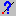
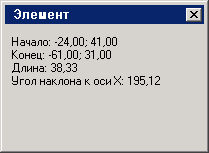
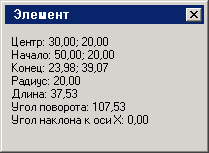

Для графического элемента, который в данный момент рисуется или выделен, можно отобразить всю инфорамцию о его размерах и координатах. Там, где это можно, на панели инструментов есть кнопка Информация об элементе . Она открывает окно с информацией.
Для отрезка:

Для дуги:
